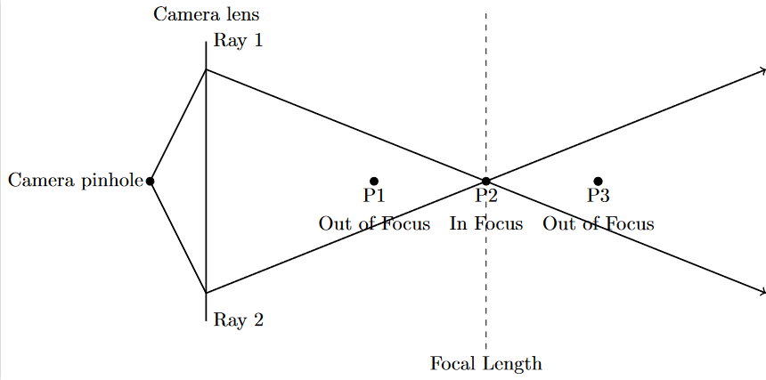
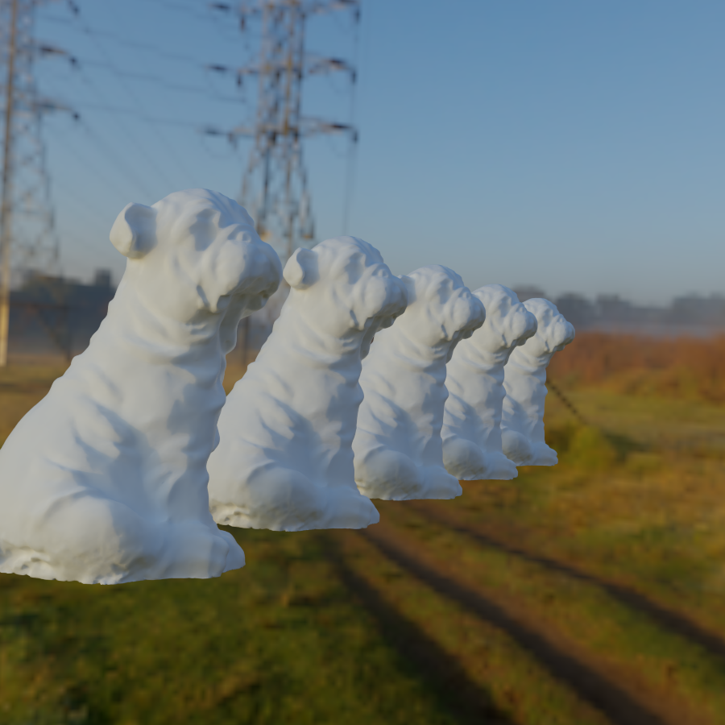
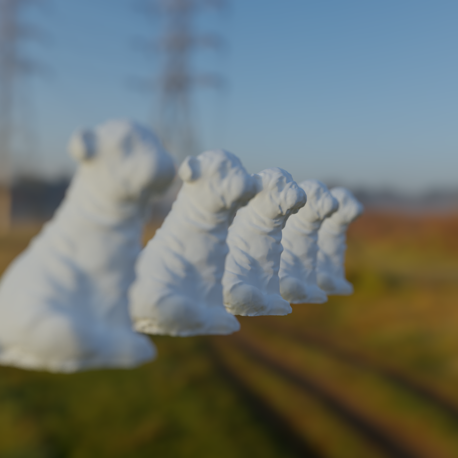

All that depth of field effect is trying to achieve is to simulate how real world camera lenses work.

And since this is a path tracer, light rays are already simulated, so all that I did was offset the origin slightly and point the ray to a focus point.
focusPoint = origin + direction * focalLength;
randomOffset = UniformFloat2(-0.5f, 0.5f) * DoFStrenght;
RayOrigin = origin.xyz + cameraRight * randomOffset.x + cameraUp * randomOffset.y;
RayDirection = normalize(focalPoint - origin.xyz);

No Depth Of Field

Depth Of Field